Clustering is an unsupervised machine learning technique used to group similar data points into clusters based on their characteristics.
Unlike supervised learning, clustering does not require labeled data; instead, it relies on patterns and structures within the dataset to form meaningful groups.
This makes clustering particularly useful for data exploration, anomaly detection, and identifying hidden subgroups.
Why is Clustering Important for PCOS Analysis?
PCOS is a complex condition with multiple symptoms that vary among individuals. Clustering helps in:
Grouping patients with similar hormonal, metabolic, and reproductive characteristics.
Identifying subtypes of PCOS, enabling personalized treatment recommendations.
Understanding relationships between lifestyle factors and PCOS severity.
How Clustering Works: Distance Metrics
Clustering methods rely on distance metrics to measure the similarity or dissimilarity between data points.
Different distance metrics impact the clustering process, and the choice of metric depends on the dataset’s characteristics.
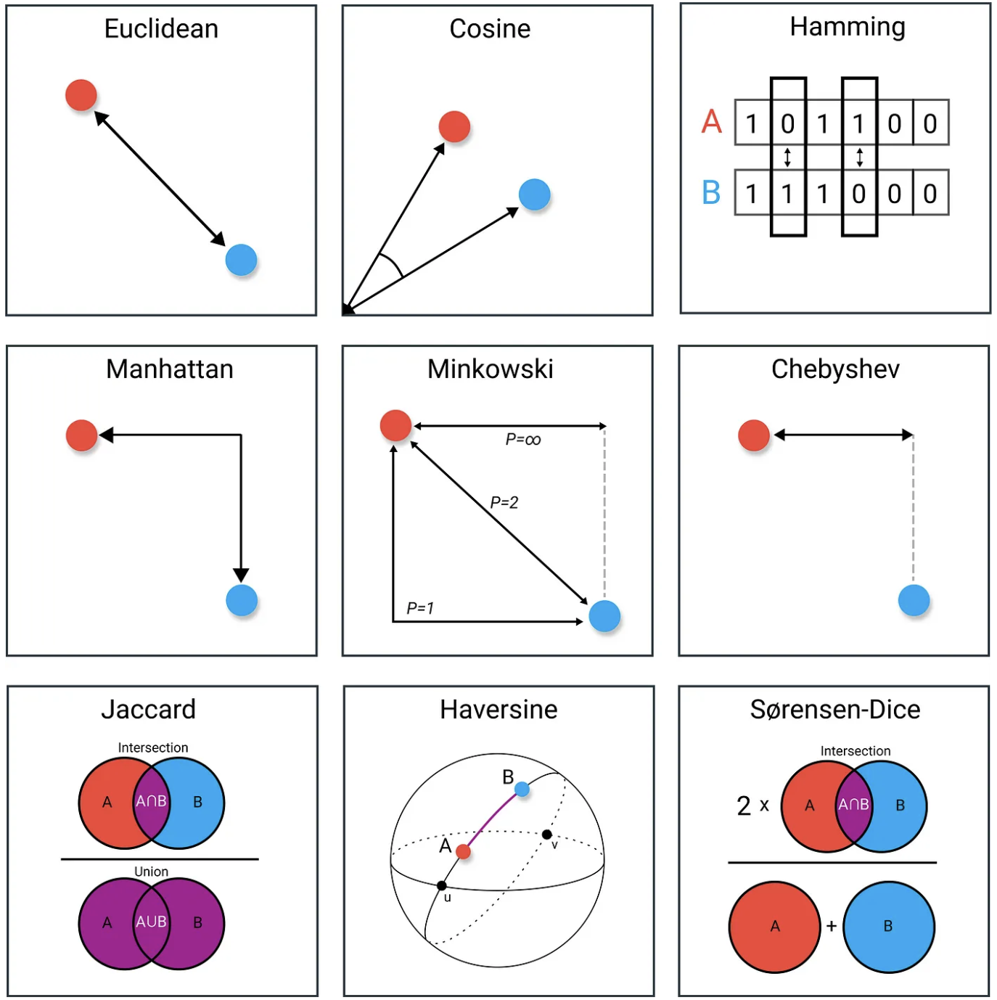
Distance Metrics in Clustering
Euclidean Distance: Measures the straight-line distance between two points in space.
Manhattan Distance: Measures distance by summing the absolute differences between coordinates, useful for grid-like data.
Cosine Similarity: Measures the angle between two feature vectors, useful when magnitude is not important, such as in text data.
These distance metrics help determine how data points are grouped, impacting the clustering structure.
Visualization of Clustering
Clustering algorithms group similar data points based on their characteristics. Below, we present both 2D and 3D visualizations of clustering results.
2D Clustering Visualization
The 2D projection of clustering results helps in understanding how data points are grouped when reduced to two principal components.
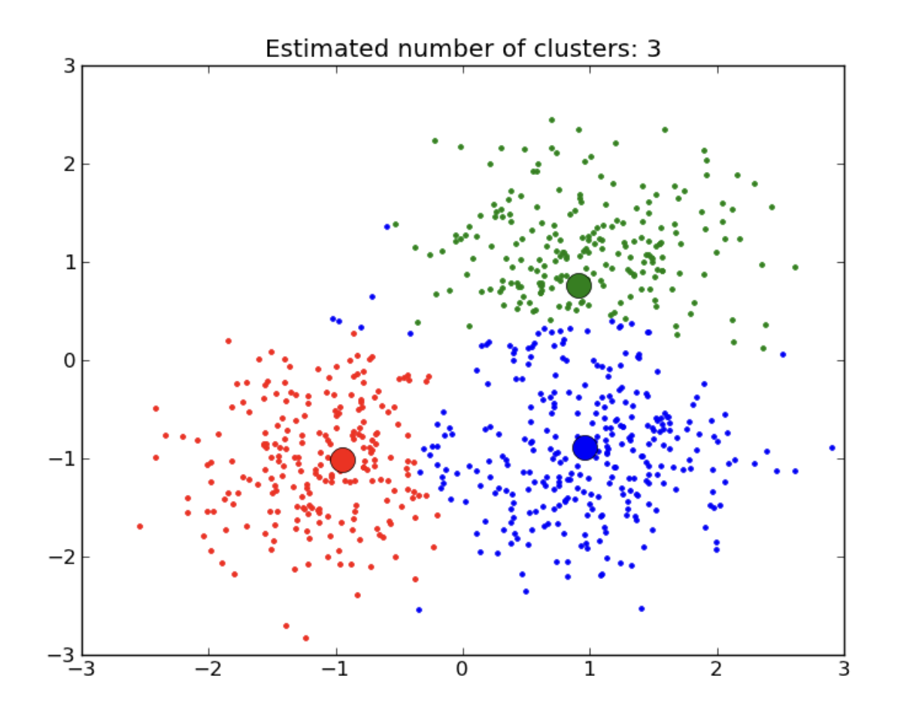
This visualization is useful for detecting well-separated clusters and overlapping regions, allowing us to evaluate how different clustering methods perform.
3D Clustering Visualization
Expanding to three dimensions provides a more detailed perspective, capturing more variance in the data and revealing deeper patterns.
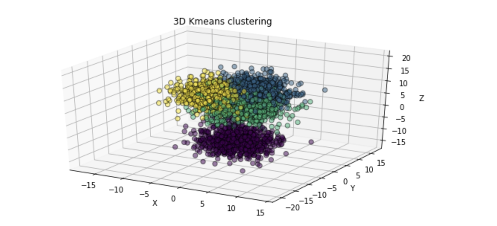
The 3D visualization allows us to see how clusters are distributed in space, especially when using methods like K-Means, Hierarchical Clustering, and DBSCAN.
How Clustering is Used in This Project
In this project, clustering was applied to identify different PCOS patient subgroups based on medical and lifestyle features.
This was done using three clustering techniques:
K-Means Clustering: Used to form distinct PCOS subgroups based on numerical data.
Hierarchical Clustering: Provided a tree-based visualization of how patients are related.
DBSCAN: Identified outliers in the dataset, which could represent unique PCOS cases.
By applying clustering, the goal is to discover hidden patterns in PCOS characteristics, optimize diagnosis, and support personalized treatment approaches.
Access Full Code on GitHub
The complete clustering analysis, including data preprocessing and model implementation, is available on GitHub.
Before applying clustering, we transformed the dataset by handling missing values, removing labels, and standardizing numerical features.
Dataset Before Preprocessing
Dataset After Preprocessing
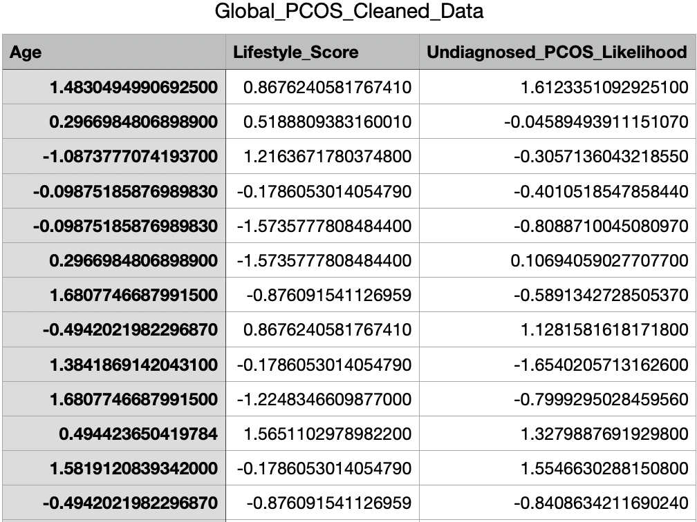
Comparison: Before vs. After Transformation (Standardization)
Feature
Before Standardization (Original Values)
After Standardization (Scaled Values)
Age
22, 25, 30, 35
-1.08, 0.29, 1.48, 1.68
Lifestyle Score
5, 7, 9, 3
-1.57, 0.86, 1.56, -0.87
PCOS Likelihood
0.6, 0.8, 0.2, 1.0
-0.4, 0.31, -1.65, 1.68
Key Differences:
Before Transformation: Data is in original scale (e.g., actual age, PCOS likelihood).
After Transformation: Data is standardized with mean = 0 and standard deviation = 1, making it easier for clustering models.
Visualization Insight:
In raw data, values vary significantly across columns.
After transformation, values are normalized, improving clustering and model convergence.
KMeans Clustering
KMeans assigns data points to K clusters by minimizing the distance between points and their centroids. The Silhouette Method was used to determine the optimal K.
Principal Component Variance Explanation
After applying PCA, we reduced the dataset to three principal components:
Principal Component
Explained Variance
PC1
33.83%
PC2
33.40%
PC3
32.76%
The first three components capture nearly all of the dataset's variance, ensuring effective clustering.
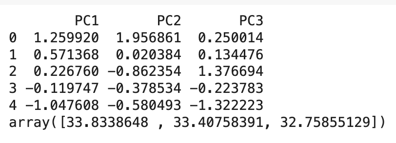
Silhouette Score Analysis
The silhouette score measures how well each data point fits within its cluster. Higher scores indicate better-defined clusters.
Silhouette Scores for Different K Values
K Value
Silhouette Score
2
0.2459
3
0.2421
4
0.2679
5
0.2709
6
0.2904
7
0.2851
8
0.2885
9
0.2891
The silhouette scores suggest that K=6 provides the best separation among clusters.
2D KMeans Clustering Visualizations
These plots show how KMeans clustering separates data in a two-dimensional space.
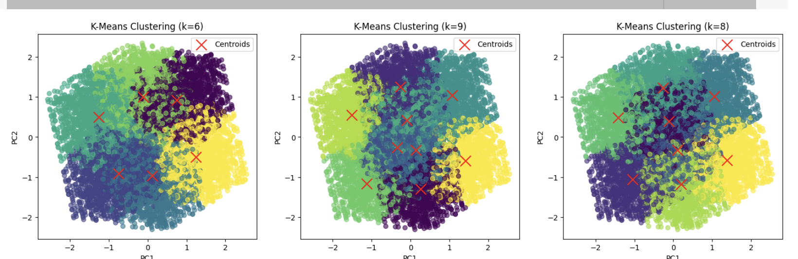
3D KMeans Clustering Visualizations
The 3D visualization provides deeper insights into how clusters are formed across three principal components.
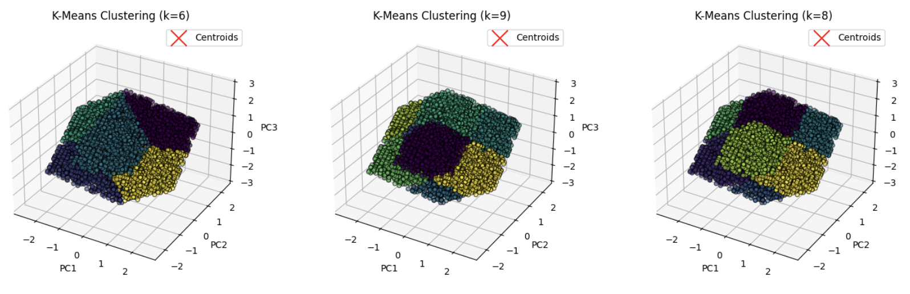
From these visualizations, K=6 provides well-separated clusters, supporting the silhouette analysis.
Hierarchical Clustering
Hierarchical Clustering builds a tree-like structure (dendrogram) to represent relationships between clusters. It helps in understanding how data points group together at different levels of similarity.
Hierarchical Clustering
The dendrogram represents the hierarchical structure of clusters, showing how individual data points merge into larger clusters step by step.
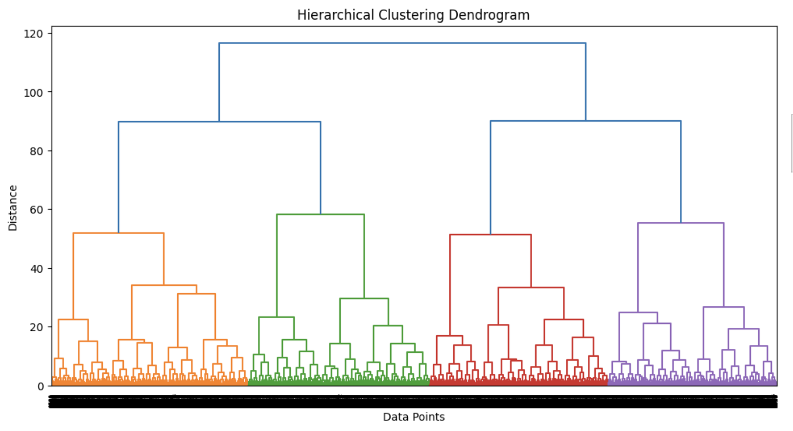
Hierarchical Clustering with Cosine Similarity
This dendrogram is based on cosine similarity, which measures how similar two data points are in terms of their angle rather than Euclidean distance.
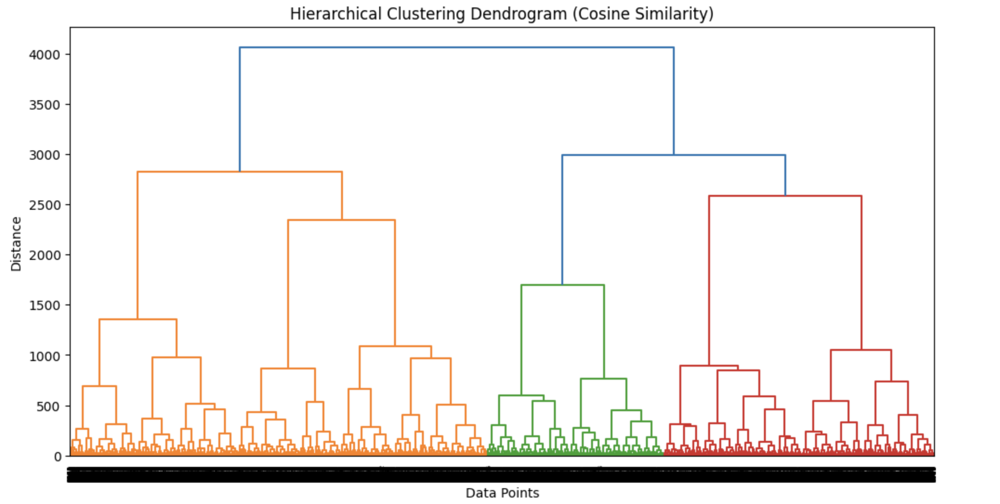
2D Hierarchical Clustering
A 2D visualization of hierarchical clustering, showing how data points group together in two-dimensional space.
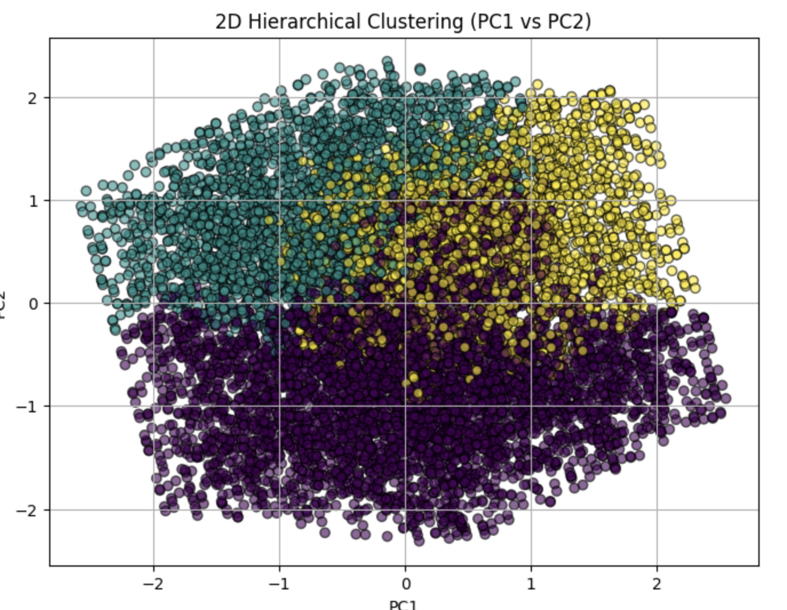
3D Hierarchical Clustering
A 3D representation of hierarchical clustering, providing a deeper look into how clusters are distributed in three-dimensional space.
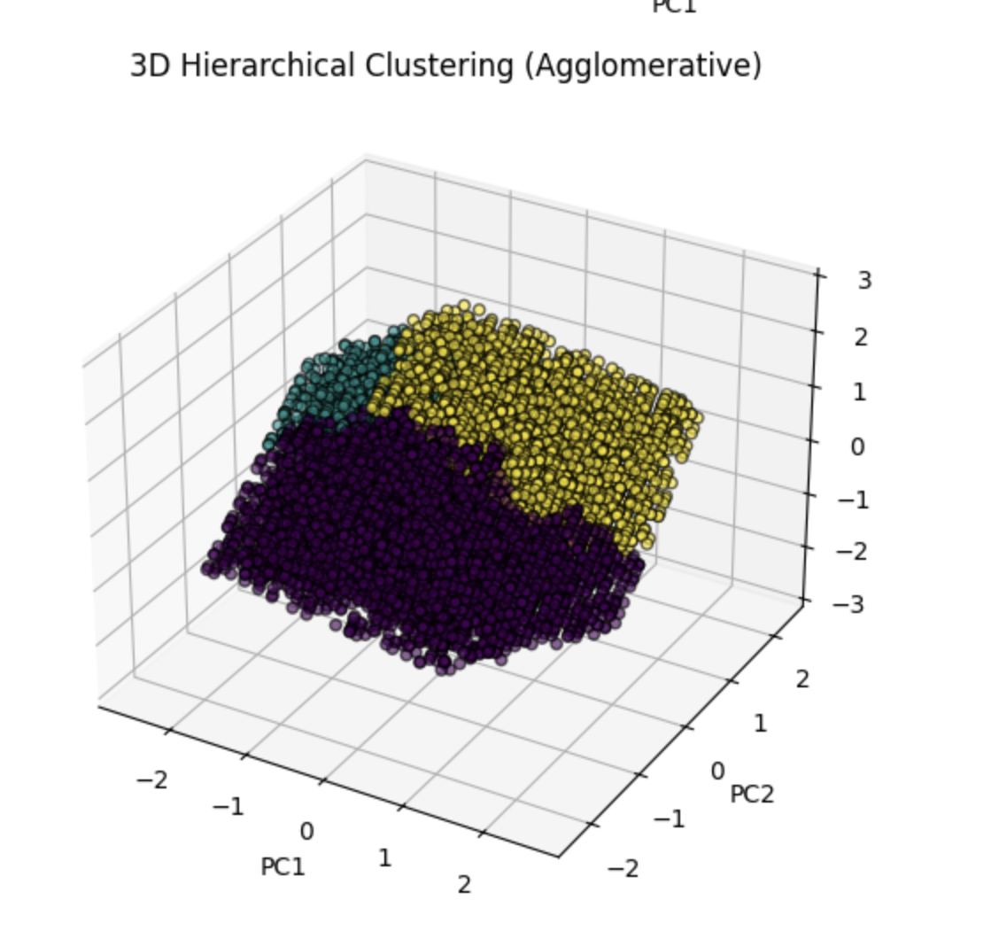
DBSCAN Clustering
DBSCAN (Density-Based Spatial Clustering of Applications with Noise) groups data points based on density. It can identify clusters of varying shapes and detect outliers effectively compared to KMeans.
2D DBSCAN Clustering
This 2D scatter plot represents how DBSCAN clusters data based on density, distinguishing core points, border points, and noise (outliers).
3D DBSCAN Clustering
A 3D visualization of DBSCAN clustering, illustrating how clusters are formed in a three-dimensional space and highlighting outlier points.
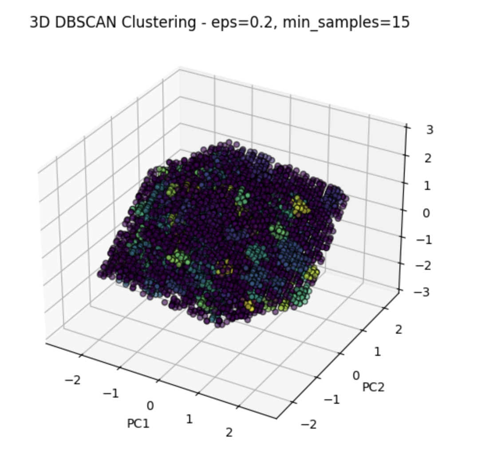
Results & Comparison
Below is a comparison of the three clustering methods applied to the PCOS dataset.
Summary of Clustering Methods
KMeans: Produces well-defined clusters when K=6, but sensitive to outliers.
Hierarchical Clustering: Useful for understanding hierarchical relationships, but may struggle with large datasets.
DBSCAN: Effectively identifies outliers and non-linear structures, but choosing the right parameters (eps, min_samples) is critical.
Silhouette Scores Comparison
Silhouette scores evaluate how well each clustering method separates data points. Higher scores indicate better-defined clusters.
Clustering Method
Silhouette Score
K-Means
0.2421
Hierarchical Clustering
0.2047
DBSCAN
0.3389
Clustering Results and Conclusion
Overview of Clustering Analysis
Clustering techniques were applied to group similar PCOS-related data points. This unsupervised learning method helps in identifying patterns and relationships in patient profiles, lifestyle habits, and medical conditions.
Best Cluster Selection & Evaluation
The optimal number of clusters was determined using the Silhouette Score Method and PCA-based dimensionality reduction.
Best K for KMeans: 6
Best Clustering Technique for PCOS Data: DBSCAN (highest silhouette score)
Silhouette Scores for Different Clustering Methods
Clustering Method
Silhouette Score
K-Means
0.2421
Hierarchical Clustering
0.2047
DBSCAN
0.3389
Key Data Patterns from Clustering
Cluster projections using 2D and 3D spaces reveal how PCOS subgroups are distributed.
The clustering approach revealed hidden patterns in medical history, lifestyle choices, and symptom severity.
Conclusion
Clustering techniques helped in discovering meaningful patterns in the PCOS dataset. The results suggest:
K-Means provides well-defined clusters but is sensitive to outliers.
Hierarchical Clustering is useful for understanding subgroup relationships.
DBSCAN effectively detects outliers, making it useful for anomaly detection in patient symptoms.
These insights can assist in personalized treatment approaches and better diagnosis for PCOS patients.